Statistics
SAMPLE AND POPULATION
It is very hard to understand and analyze the population so we work on the samples drawn from the population. Sample statistics is used to estimate the parameters of the population.
Understanding the sample is less time consuming and less costly. The sample should be random and representative where each sample point is strictly chosen by chance.
CLASSIFICATION OF DATA
Data can be classified into two ways
- Type of data
- Measurement level
TYPE OF DATA
- Categorical
- Numerical
- Discrete
- Continuous
MEASUREMENT LEVEL
- Qualitative
- Nominal - Categories where order doesn't matter.
- Ordinal - Follows order. For example rating (1-5)
- Quantitative
- Interval - Uncommon, Does not have a true 0. For example temperature
- Ratio - Has a true 0. Represents most of the things. Example Age of person
VISUALIZATION - Categorical Data
- 1.Frequency distribution table
- Group by the categories and find the total frequency of occurring each category
- 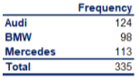
- Bar charts
- Constructed from the frequency distribution table
- 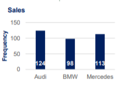
- Pie charts
- Calculates the relative frequency of all the categories in the frequency table
- Pie chart not just compares the items from each other but also gives the share of the total
- Market share is mostly represented by Pie charts
- 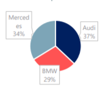
- Pareto diagrams
- It is a special type of bar charts where categories are shown in the descending order of frequency.
- There is a curve also on the same graph showing the cumulative frequency
- It can be used to showcase the Top N categories.

VISUALIZATION - Numerical Data
- Frequency distribution table
- We group the data into intervals and then find the corresponding frequencies
- We can make from 5-20 intervals of our data
- We can also calculate the relative frequencies of the grouped data
- Histograms
- Looks similar to Bar chart but conveys a different meaning
- X-axis represents the intervals of the data and the Y-axis represents the frequencies
- Histograms can also be created from unequal intervals. For example Age group 18-25, 25-35, 35-50, 50+
- 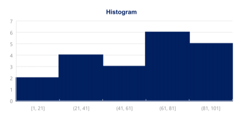
VISUALIZATION - Multiple variables
- Cross tables
- 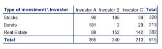
- Scatter plots
- Used to represent two numerical variables
- X and Y axes represent each of the variable and each point on the graph shows 1 record
- Used to see if there is any trend in the data
- 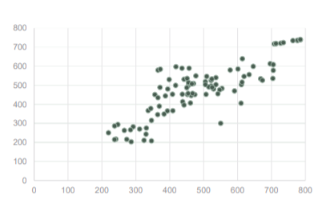
MEASUREMENT OF CENTRAL TENDENCY - Mean, Median and Mode
- Mean is the average of all the observations
- Mean is affected by the outliers
- Median is the central item and is unlikely to get affected by the outliers
- Mode is the most common observed value
- None of them best describes the data. One should look at all the three statistics to describe the central tendency of the data
MEASURING SKEWNESS
- If mean > median, it is positive/right skewed. It means the tail is leading to the right which means outliers are towards the right
- If mean < median, it is negative/left skewed. It means the tail is leading to the left which means the outliers are towards the left
MEASUREMENT OF THE VARIABILITY
Variability of the data is mainly represented by the 3 statistics
Variance, Standard Deviation and coefficient of variance
- Variance measures the dispersion of the data points around their mean
- Variance is equal to the sum of the squared differences between their observed value and their mean and then divided by the total number of observations
- The closer the numbers are from mean, smaller the number we would obtain
- The denominator in the formula of mean of population is N whereas in case of sample, it is (n-1)
- Variance is also called as the second central moment
- The unit of measurement of variance is squared so it is hard to relate it to the underlying data so that derives the need of the Standard Deviation
- Standard Deviation is the square root of the variance and is expressed in the same unit as the unit of the data
- Coefficient of variance is the relative standard deviation to the its mean and is equal to the standard deviation divided by the mean. Comparing the standard deviation of two different datasets is meaning less but comparing the coefficient is not
MEASURES OF RELATIONSHIP BETWEEN VARIABLES
Covariance and correlation
- Covariance is the measure of the joint variability of the two variables. It gives a sense of the direction in which the two variables are moving. Its outcome is positive if both the variables move in the same direction otherwise negative. If the movement of the variables is independent then the covariance will be 0
- 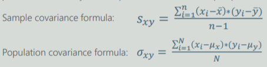
- Covariance(similar to variance) is very hard to interpret because it can take even too small or too large values so this derives the need of the correlation
- Correlation scale is between -1 and 1. The correlation of 1 means that both the variables are moving in the same direction and are perfectly correlated. Correlation of -1 means that both the variables are moving in exact opposite direction but are perfectly correlated. 0 means no correlation
- 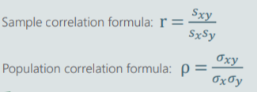
- As a general rule, any correlation between -0.2 to 0.2 can be disregarded
- Correlation does not imply causation. In the housing example, the size of the house causes the price of the house not the vice versa
INFERENTIAL STATISTICS
- This relies on the probability theory and the distribution of the data
- It uses the sample statistics to predict the population parameters
- [TODO] Mention all the types of probability distributions here
CENTRAL LIMIT THEOREM
- When we are referring to a distribution formed by the samples then we use the term called as sampling distribution.
- When we are dealing with a sample distribution of the means of the samples drawn from the population then the mean of the sampling distribution approximates the population mean
- No matter the distribution of the population, the sampling distribution of the mean will approximate a normal distribution
- Usually a CLT to apply we need a sample size of at least 30 observations.
STANDARD ERROR
- Standard error is the standard deviation of the distribution formed by the sample means
- It is defined as the standard deviation divide by the square root of the n
- It is the variability of the means of the different samples we extracted
- As the sample size increases, standard error decreases
ESTIMATORS AND ESTIMATES
Point estimates and confidence interval estimates
- A point estimate is a single number where as the confidence interval is an interval with an associated confidence level
- Point estimate is located exactly in the middle of the confidence interval
- For example, the sample mean is the estimate of the population mean and similarly the sample variance is the estimate of the population variance
- There is efficiency and bias associated with each estimators. The most efficient estimator is the unbiased estimator with smallest variance
- 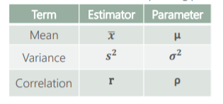
CONFIDENCE INTERVAL
- 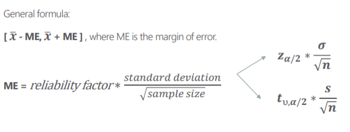
- A confidence interval is an interval associated with a confidence level.
- The most popular confidence levels are 99, 95 and 90% depending upon the case to case
- Alpha(significance level) = 1 - confidence level
- Alpha or the level of significance is the probability of rejecting the null hypothesis given that the null hypothesis is true. It is also called the Type 1 error
- [Point estimate - critical value * standard error, point estimate + critical value * standard error]
- (critical value * standard error) is also called the Margin of Error (ME). It is inversely proportional to the size of the sample
- [Point estimate - ME, point estimate + ME]. Smaller ME means that the confidence interval will be narrower
- The broader the confidence interval is, more confidence we get
- To find the critical value, we either use Z statistic or T statistic. If the population variance is known then we use Z statistic otherwise T statistic. It also depends on the sample size, if the sample size is less than 30 we use T statistic otherwise Z statistic
- To find a value in Z table, we find the value of (1 - alpha/2) in the table. The corresponding Z comes from the sum of the row and column headers associated with the cell
STUDENT T DISTRIBUTION
- Visually it looks much like a normal distribution but with fatter tails
- Degrees of freedom = Sample size - 1
- In T table, the rows indicates the degrees of freedom (d.f) and the columns are the alpha values. The corresponding cell value is the critical value
- After the 30th row, the numbers don't very much and the T statistic table becomes almost the same as Z statistic table
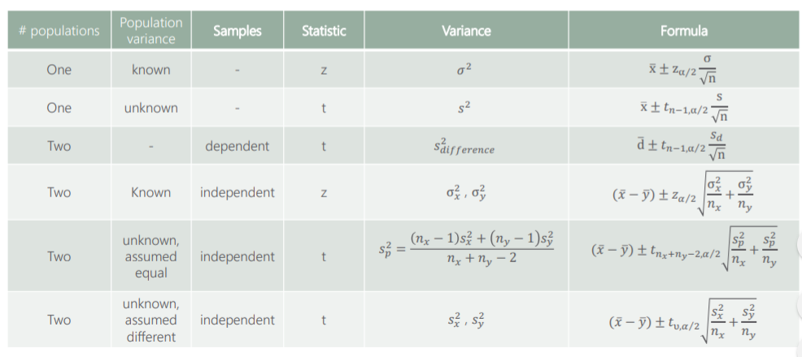
CONFIDENCE INTERVAL FOR TWO MEANS WITH DEPENDENT SAMPLE (2 POPULATIONS)
- When we are researching the same subject over time for eg - weight loss/blood samples, we are looking at the same person before and after the test
- This test is mainly used when developing medicines. The patients are observed before and after taking the pill. Here we have two means and the dependent sample
CONFIDENCE INTERVAL FOR TWO MEANS WITH INDEPENDENT SAMPLE (2 POPULATIONS)
- When we compare the grades of the students from two different departments (Engineering and Management) then we will two means and the samples are independent
- Variance of the difference of the two means is equal to the (variance of first population/sample size1 + variance of second population/sample size2)
- [(mean1 - mean2) - critical value * variance of the difference, (mean1 - mean2) + critical value * variance of the difference]
HYPOTHESIS TESTING
- Formulate a hypothesis
- Find the right test
- Execute the test
- Make a decision
“A hypothesis is an idea that can be tested”
There are two hypotheses that are made
- Null hypothesis - H0 - This is to be tested
- Alternative hypothesis - H1 - This is everything else than H0
Generally we formulate the hypothesis in such a way that we try to reject the null hypothesis and the alternative hypothesis is the one which challenges the null hypothesis. In a more formal way, The null hypothesis is the present state of affairs while the alternative hypothesis is our personal opinion
Significance level is the probability of rejecting the null hypothesis, if it is true
We always set the value of significance level and then test our hypothesis against it. 0.05 is the most common value but it varies from case to case
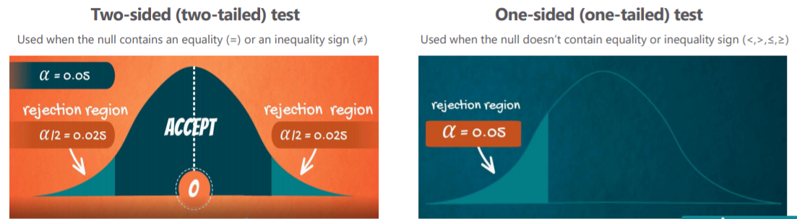
Example of forming a hypothesis
Assume that you are carrying out an analysis on how the students are performing on average. The university dean told you that the mean population grade is 70%. Being a data scientist, you decided to test it
H0 : Population mean grade = 70%
H1 : Population mean grade != 70%
Perform the Z test and is given as
- Z = (sample mean - hypothesized mean) / (SD of sample/sqrt(n))
- If sample mean to close to the H0 mean then the Z will be close to 0
- Find the Z-critical value from Z table and compare it with the Z score
- If Z-calculated > Z-critical, we reject the null hypothesis otherwise not
TYPE 1 VS TYPE 2 ERROR
- Type 1 error is when you reject the true null hypothesis and also called the False Positives and its probability is defined as alpha (the level of significance)
- Type 2 error is when you accept the null hypothesis when it is actually false and also called the False Negative.
| H0 is true | H0 is false |
Accept | Correct | Type 2 error |
Reject | Type 1 error(False positive) | Correct (False negative) |
P VALUE
- It is the probability of finding the observed or more extreme value when the null hypothesis is true. It is a number between 0 and 1
- If p <= 0.5 , then this is a strong evidence to reject the null hypothesis
- If p> 0.5, then this is a week evidence against the null hypothesis
- The lesser the value of P, the strong is the evidence for rejecting the null hypothesis

REGRESSION ANALYSIS
- The most common method of prediction. It is used whenever we have a causal relationship between the variables. For example, the amount of money you spend depends on the amount of money you make
- Before performing the regression analysis, first check the correlation between the two variables either by a scatter or most preferably the coefficient of correlation
- Always remember that the correlation does not imply causation
LINEAR REGRESSION
- Linear regression is a linear approximation of a causal relationship between two or more variables
- Get the data => Design a model that works for that sample => Make predictions for the whole population
- The simplest linear regression is the simple linear regression model y = B0 + B1x1 + e
- The independent variable x has a causal relationship with the dependent variable y. For example, the income you receive is related to the years of education but its not true vice versa
- The linear regression analysis is known for the best fitting line that goes through the data points and minimizes the distance between them. On the other hand, the correlation is a single point which only tells the direction where the two variables are moving
- Whenever you find the data that looks regressable, don't dive straight into regression analysis. Always look for the causality
- The distance between the observed value and the regression line is called the residual
SST, SSR, SSE(RSS) > SST = SSR + SSE
- SST or sum of squares total is the squared distance between the observed dependent variable and its mean. Think of this as the dispersion of the observed variables around the mean and it is a measure of the total variability of the dataset
- SSR or sum of squares regression is the sum of the squared distance between the predicted value and its mean. Think of it as a measure of how well your line fits the data
- SSE or RSS or sum of squares errors is the sum of the squared distance between the observed and the predicted values. We always try to minimize it to get the least errors in our model
R-SQUARE
- R^2 = SSR/SST
- It is equal to the variability explained by the regression divided by the total variability.
- It takes the values from 0 to 1
- The larger value of R^2 means the regression model is a better fit for the data
- If R^2 = 1, means that the model explains the entire variability of the data
- R^2 = 0 means the model failed to explain any variability of the data
OLS
- OLS or Ordinary Least Squares is the most common method to estimate the linear regression equations
- Least square stands for the minimum squares error (SSE) so this method aims to find the line which minimizes the sum of the squared errors
- There may be many lines possible to do the regression on data but the OLS finds the one with the smallest error
- In case of multiple regression, we increase the explanatory power by 0 or more. We cannot lower it
ADJUSTED R-SQUARE
- Adjusted R^2 < R^2
- It penalizes the excessive use of the variables so it is used to find the optimal number of variables required
F STATISTIC
- It is similar as the Z statistic or T statistic and is used for testing the overall significance of the model
- The lower the F statistic, the closer to a non-significant model
OLS ASSUMPTIONS
- Linearity
- No endogeneity
- Normality and homoscedasticity
- No autocorrelation
- No multicolliearity